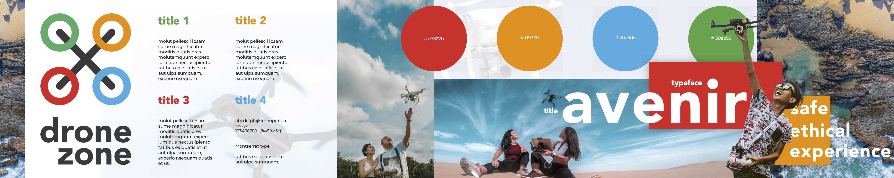
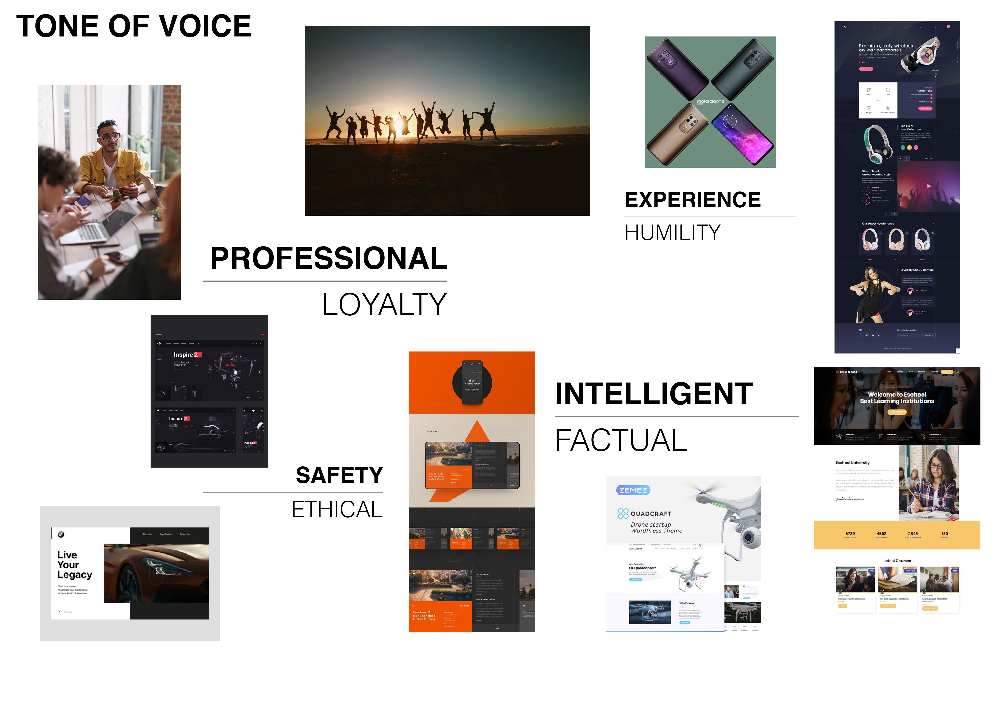
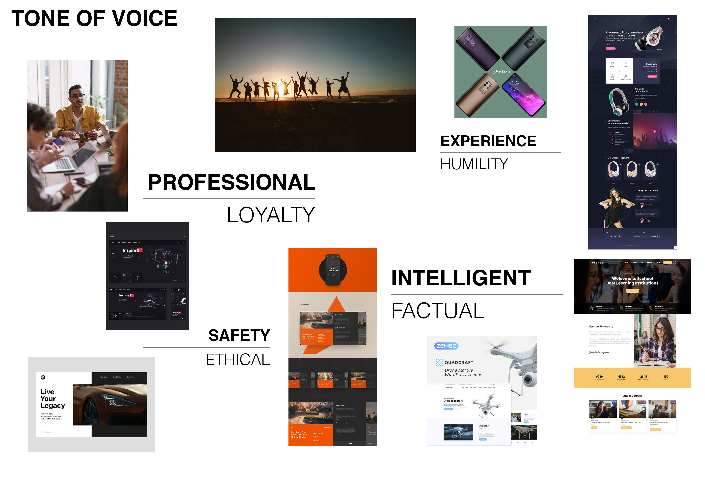
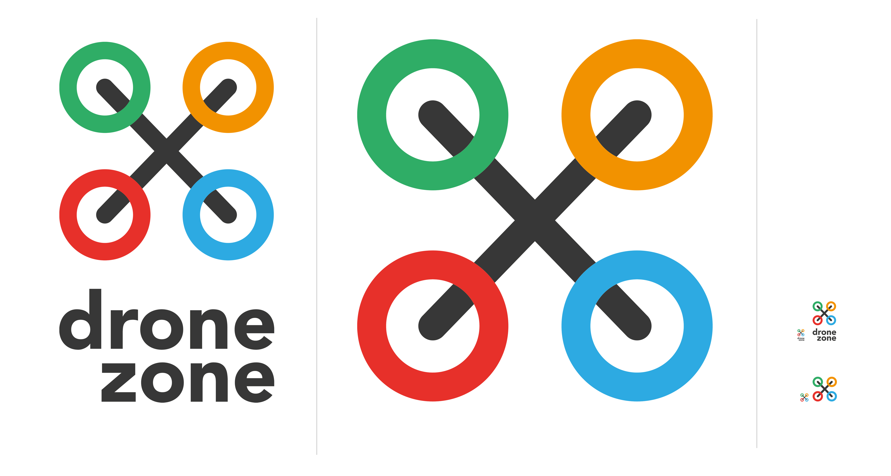

User
Experience
| Blog 2
stylescape - moodboards - logo -frieldreview
Branding & Design
Stylescape
For PDF Click Here
Moodboards


 

Logo
Field Review
CES
CES is a well known convention that I have followed over the years. It was the main inspiration for my initial core idea. The idea behind the brand is letting companies show their latest innovation and products to the world through a convention medium. The topics are very broad and doesn’t discriminate, showing a wide variety of designs. I really like the idea behind the brand but for the purpose of my project the scope is too large. I thought deeply about the practicality of having such a broad topic and decided to narrow my field down.
In terms of CES’ website design it follows common design trends found in most websites. A large image to cover the home page, followed by typography to give more context to the user. The overall feel gives off a light and friendly tone of voice. This is achieved through the use of light blues and a lot of white space. In terms of UX design, nothing is confusing or difficult to follow. The best part was the broad range of topics you can explore through the website, while each only giving a brief description is enough for its purpose.
Drone Con
After looking at different conventions I was stuck brainstorming what the topic I wanted to revolve my website around. With my limited experience and time I didn’t want to delve into something too complicated as it would be more quantity than quality. I decided to something I recently got into drones, while somewhat random I thought it could be interesting. The product is very niche in conventional terms, but covers a broad array of uses such as photography, cinematography and more fun things like racing.
It also helped that I couldn’t think of an event like it. Of course being the internet It didn’t take long to find a concept similar to my own already in use. Drone Con was the site I found that most match my concept ideation, but necessarily in design. The feel is very clean and this is seen in even the smaller details such as the logo and the limited use of graphics. Compared to CES it feels more like a professional website, taking itself very seriously. Of course this is probably the idea, but compared to CES’ friendly design I don't think it's something I want to replicate.
It also wasn’t exactly clear what the convention was about. It didn’t go into any detail about the exhibits other than what companies would be attending. Perhaps i'm completely miss categorizing it when its true purpose is a professional conference stage for suits and CEO’s. Overall the website is elegant, but rather boring. It also doesn’t make it crystal clear enough its purpose .
Armageddon Expo
I choose to look into Armageddon as it is the only convention I actually already knew and have attended. Because of this my initial view on what we need to achieve for this summative was heavily influenced by Armageddon. Gradually my goal changes with development of the ideation stage and my convention will have much less grandeur than Armageddon. However this does not disqualify it for helping me know what tools and information I should have. This is the best thing about Armageddon's website compared to the previous two, It is by far the most informative. Not only does it show every event available along with conesiding information, but also maps times and prices. I was honestly shocked how much there was to go on, but if anything it just shows the faults of the other websites.
Because of the overwhelming library of information the design is very cluttered, not acting unlike the more generic news websites for the previous summative. This means the design is not very aesthetically pleasing, deciding to go with function over form. Most of the site follows a basic grid structure, not being afraid to over clutter things. Overall the navigation is refined, giving the most important information. I think this serves as a lesson for being able to strike a balance between the design and the content. Unlike the other researched sites I don’t want to fall into the trap of making a pretty piece of art that is only good for looking at. Along with not making something that could of been made 15 years ago.